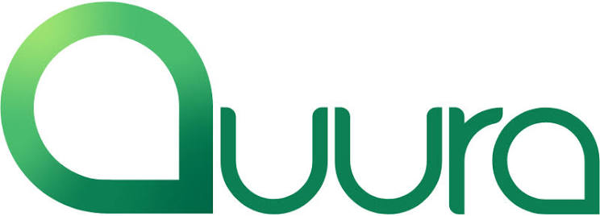

M.Sc. in Computer Science
University of Haifa
Thesis: Few-Shot Feature Adaptation via Balanced Pairwise Affinities on Frozen Vision Transformers
Applied AI Researcher · Computer Vision & Audio
jerryabuayob@gmail.comI am an Applied AI Researcher at Camtek, working on computer vision and deep learning for semiconductor inspection and metrology. I completed my B.Sc. and M.Sc. in Computer Science at the University of Haifa. During my M.Sc., I worked in the Computer Vision Lab under the supervision of Dr. Simon Korman.
My research focuses on learning robust models from limited data. My work spans few-shot adaptation, multimodal representation learning across vision, text, and audio, and efficient inference for generative models.
Applied AI Researcher · Full-time
Aug 2026 — Present
I work on wafer inspection and defect detection using computer vision and deep learning.
Assistant Researcher · CV Lab
May 2024 — Jul 2026
Teaching Assistant
Mar 2023 — Jul 2026
Software Developer · Robotics Lab
Sep 2022 — Aug 2023

ML / Backend Engineer · Internship
Jun 2025 — Oct 2025
I worked on an AI-enhanced web scraping system for curating and classifying funding opportunities.
University of Haifa
Thesis: Few-Shot Feature Adaptation via Balanced Pairwise Affinities on Frozen Vision Transformers
University of Haifa
Discrete diffusion language models can generate text efficiently by updating multiple masked positions in parallel, but this introduces a quality–latency trade-off. We propose AXON, a training-free module that monitors uncertain masked tokens and selects confident anchors that can support later denoising. Across reasoning and code-generation benchmarks, AXON improves the quality–latency trade-off of existing parallel decoders, often reducing the number of function evaluations while maintaining or improving accuracy.
@article{ayoub2026supportive,
title={Supportive Token Revealing for Fast Diffusion Language Model Decoding},
author={Ayoub, Giries Abu and Barbara, Mario and Pastor-P{\'e}rez, Llu{\'\i}s and Bien, Tanja and Barthakur, Aneesh and Maalouf, Alaa and Mualem, Loay},
journal={arXiv preprint arXiv:2606.04236},
year={2026}
}Few-shot classifiers built on frozen vision transformers remain sensitive to feature bias and geometric misalignment, particularly under domain shift. This work introduces a geometry-aware task adaptation framework that models balanced pairwise affinities through entropy-regularized optimal transport and a lightweight adapter. The approach reshapes the representation space without updating the backbone and extends naturally to transductive alignment between image and text embeddings, improving few-shot and zero-shot inference across diverse feature extractors.
@mastersthesis{ayoub2026fewshot,
title={Few-Shot Feature Adaptation via Balanced Pairwise Affinities on Frozen Vision Transformers},
author={Ayoub, Giries Abu},
school={University of Haifa},
year={2026}
}Few-shot classification is widely used for learning from limited labeled data, yet most evaluations implicitly assume that target concepts are independent of contextual cues. We introduce SpurAudio, a benchmark that leverages the natural separability of foreground events and background environments in audio to enable controlled evaluation of contextual shifts across support and query sets. We show that many state-of-the-art few-shot methods suffer severe performance degradation when background correlations are disrupted, including large pretrained audio foundation models. The results reveal systematic differences in how methods rely on context and motivate benchmarks that explicitly probe context dependence.
@article{ayoub2026spuraudio,
title={SpurAudio: A Benchmark for Studying Shortcut Learning in Few-Shot Audio Classification},
author={Ayoub, Giries Abu and Tukan, Morad and Mualem, Loay},
journal={arXiv preprint arXiv:2605.13672},
year={2026}
}Fully few-shot class-incremental audio classification requires recognizing new classes from only a handful of examples per session without forgetting earlier classes or relying on a large base dataset. SPECTRA combines a lightweight embedding adapter, exemplar-free subspace feature replay, and transductive optimal-transport prototype refinement. Across NSynth-100, FSC-89, and LS-100, it improves average accuracy and reduces forgetting over current baselines.
@article{ayoub2026spectra,
title={SPECTRA: Subspace-Preserving Embedding Calibration, Transport, and Replay for Fully Few-Shot Class-Incremental Audio Classification},
author={Ayoub, Giries Abu and Mualem, Loay and Korman, Simon},
journal={arXiv preprint arXiv:2608.25054},
year={2026}
}